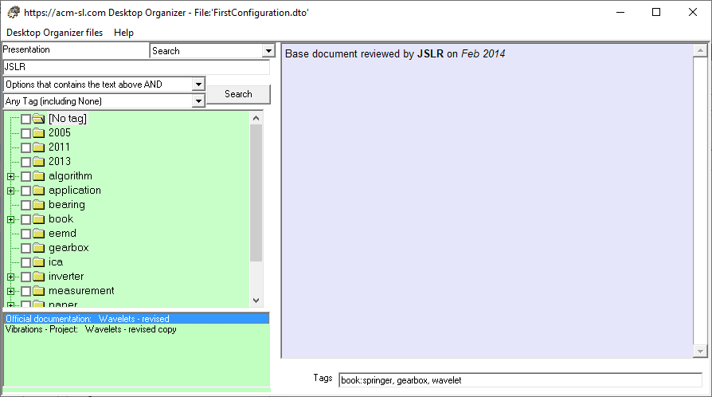

Sometimes we may need to search for Options looking for a particular text either located some place in its title or in its Comnent. The figure above shows one of these case using the Search view. The text to look for is "JSLR", without restrictions by tags. The application finds two Options that fulfil this requirement: "Official documentation: Wavelets - revised" and "Vibrations - Project: Wavelets - revised copy".
The functionalities of the possible searches takes into account:
- A text.
- A set of tags (including none).
The possible combinations are:
- Options containing the specified text, regardless of their tags.
- Options containing the specified text OR that contains any of the tags marked in the tag tree.
- Options containing the specified text AND containing any of the tags marked in the tag tree
- Options containing the specified text OR containing any of the labels NOT marked in the label tree.
- Options containing the specified text AND containing any of the labels NOT marked in the label tree.
- Options containing any of the tags marked in the tag tree (regardless of the text).
- Options containing any of the tags NOT marked in the tag tree (regardless of the text).